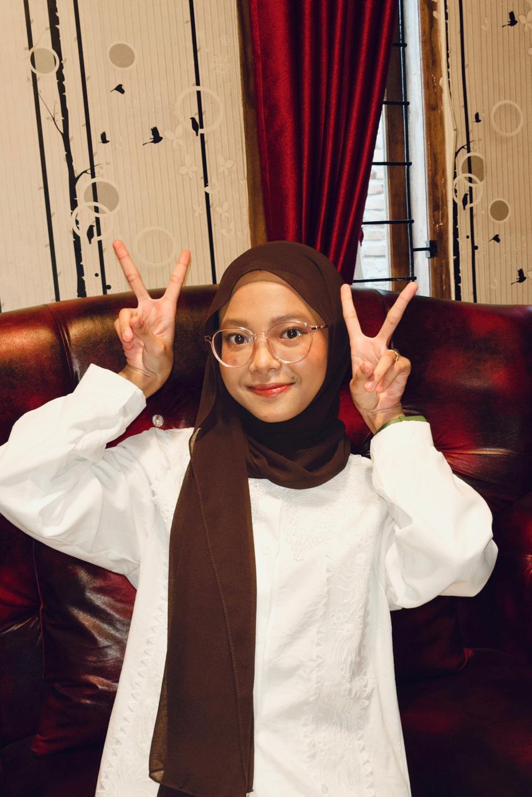

Halo! Saya Elisa Tisya Nugraha, mahasiswi Ilmu Komputer Universitas Lampung yang memiliki ketertarikan besar di bidang desain UI/UX dan pemrograman. Saya percaya teknologi bisa menjadi alat yang indah jika disentuh dengan kreativitas dan dedikasi.
Hire Me